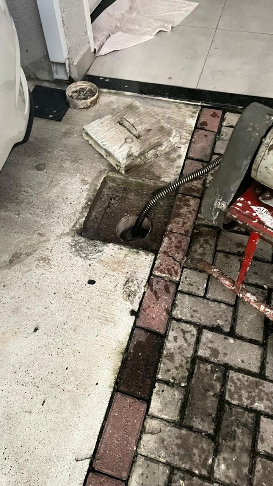

Quando suspeitar da tubulação
- O entupimento retorna poucos dias depois de resolvido.
- A água desce devagar em vários pontos, não em um só.
- Há barulho de ar ou "gargarejo" nos canos.
- Aparecem borbulhas em ralos ao usar outros pontos de água.
O que acontece dentro do cano
Com o tempo, gordura, sabão, sujeira e resíduos formam uma camada que reduz o diâmetro interno do tubo. Trechos com curvas, desníveis ou emendas mal feitas retêm ainda mais material.
Uma desobstrução bem feita remove o bloqueio na origem. Se o problema voltar, a avaliação deve olhar também o trajeto e as condições da tubulação.
Como a Rota Livre atende
Avaliamos o ponto afetado, explicamos o que foi encontrado, apresentamos o orçamento antes de começar e usamos equipamento adequado ao tipo de obstrução. Ao final, deixamos o local limpo.
Dúvidas frequentes
Por que o entupimento volta?
Pode haver gordura aderida ao longo do cano, desnível, trecho danificado ou uso inadequado do ponto. A avaliação no local ajuda a identificar.
Atendem prédios e comércios?
Sim. Atendemos residências, comércios, empresas e condomínios.
Posso pedir orçamento pelo WhatsApp?
Sim. Conte o que está acontecendo e envie fotos, se possível.